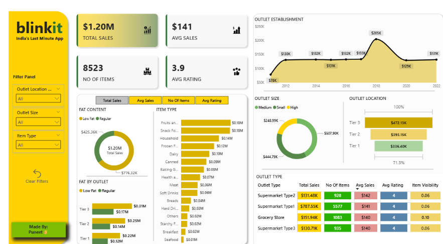
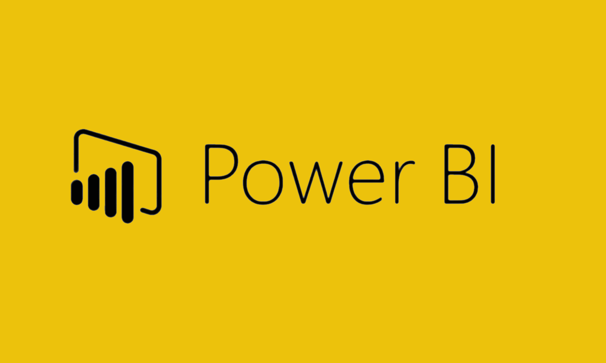

Cleaned and prepared raw housing estate data using SQL in MySQL Workbench to ensure accuracy,
consistency, and readiness for analysis. Addressed issues like null values, inconsistent formats,
duplicates, and invalid entries through structured SQL queries.

An interactive Power BI dashboard showcasing Blinkit’s $1.20M total sales, product performance,
and outlet analysis. It highlights trends by item type, fat content, outlet size, and location tiers,
with dynamic filters for deeper insights.


A SQL-based data exploration project using IMDb movie dataset. Analyzed movie runtimes, ratings, gross revenue, and top directors using CTEs, aggregation, and sorting to derive insights from 900+ movie records.

An interactive Power BI dashboard built to explore trends in job roles, salary distribution, job satisfaction, and work preferences. This project transforms raw survey data into insightful visualizations for data-driven career analysis.

A visually compelling Power BI dashboard analyzing Zomato restaurant data. It highlights trends in ratings, cuisines, cost, locations, and customer behavior to uncover insights that can drive strategic decisions in the food delivery and dining sector.

This project involves building an interactive Sales Dashboard in Excel that helps visualize and analyze key performance metrics such as revenue, profit, orders, and regional performance.The dashboard enables business users to quickly identify trends, top-performing categories, and areas needing attention.

A Python-based web scraping project that tracks the daily price of a T-shirt from an e-commerce site, storing it in a CSV file. The collected data is used for time-series analysis to uncover price trends, patterns, and fluctuations.

This project scrapes the Wikipedia page listing countries by population and extracts the main data table into a structured CSV file. Using Python and BeautifulSoup,The data is then cleaned, sorted, and ready for exploratory data analysis or visualization.